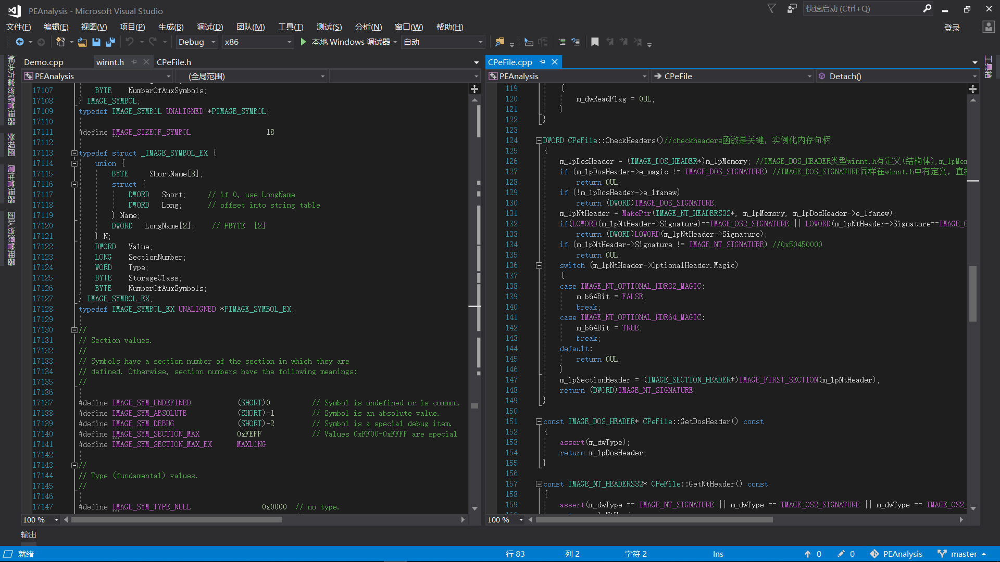
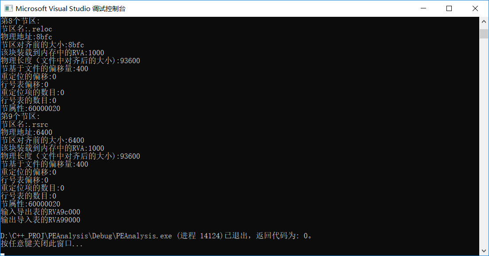

PE文件解析工具编写
有的时候一条路上走远了，走的太长，真的会忘记自己当前最需要什么，感慨自己还是成熟的太晚，眼界还是不够开阔。师傅之前一直说的需要提升代码和项目编写的能力，直到现在才意识到，已经很晚了，留下的时间不多了。
根据实际出发，单纯的漏洞分析我入门相对较晚，瓶颈期较长，所以导致最后学的东西零零散散不精通，直到现在手上也没有一枚CVE号，感慨一波自己还是太菜，所以把目光转向游戏安全，因为乙方没有自己项目或者产品的话在市场和行业上只能是处于弱势，一些小的乙方公司更是如此，单纯的接单授权做测试和漏洞挖掘终究不是长远之计，未来这些小公司可能甚至会因为接不到活而饿死（猜测），而甲方有自己项目的话，可能情况会相对更好，毕竟能自力更生，游戏公司特别如此，有一群二次元死肥宅供着，怎么样都难亏吧，专门做二进制漏洞分析和挖掘的话现在只有大厂的研究室要了，因为单纯的做研究是没有直接的经济产出的，能挖到CVE还好说，挖不到就尴尬，所以现在把目光转向更普遍产业链更广一点的行业，这里选择游戏安全，其一，本人对游戏较感兴趣，相关技术包括hook，注入，外挂，调试反调试之类的还是懂一点，其二，游戏最近几年经济下行状态下应该是个不错的选择，相比一些大而空的项目，游戏公司算是比较实在或者说传统的了，投资人愿意烧钱，消费者也愿意买单，美滋滋，这里从实际出发，实事求是，其三，本人一直想涉足客户端开发方向（高大上），如果能实习的话，还是希望能学到一点端游开发相关的。所以最近的话打算把上海各个厂的游戏安全实习岗都投一波，首先是希望能收获一波面试经验，提升自己的面试技术，其次是如果遇到比较牛逼的面试官被吊锤，希望能了解到自己的不足，反向鞭策一下自我，说真的师傅一走过的有点闲了。
以上就是这段时间的打算，总的来说就是学习+投简历，希望能获得好的效果，拿到几个offer。
这几天闲来无事想要学下CPP，嫌菜鸟教程啥的讲的基础&直接翻大部头容易犯困，就直接开撸，项目驱动型鞭策自己去了解相关的知识，写了好几天了，今天写的差不多了，推上gayhub以后打算写一篇博客，算是对自己的一种激励吧。腾讯的面试官说的很对，写博客其实作用真的很大，只是坚持和不坚持的问题，写习惯就好了，人家夜影写了三年了。。。。orz
工具源代码主要包含三个部分，一个头文件，里面定义了非常多的接口，有些实现了，还有很多没有实现，因为PE文件格式中有很多一部分字节码代表的信息并不是很重要，所以相关用不到的功能并没有实现。之后是接口实现，写在一个cpp文件里，代码直接将整个PE工具的功能放在一个类里，之后就是对相关功能的实现。第三部分是一个demo，用来调用第二个文件中的功能，解析EXE文件并输出相关信息的。
这里大概讲一下实现第二部分，也就是接口实现代码的内容，首先CreateFile创建文件对象，获取文件对象句柄，其次CreateFileMapping映射文件对象到内存中，返回一个指向映射区域内存的句柄/指针。这个指针是指向载入内存的可执行文件开头的，但是单纯一个指针并不能表示什么，这里我们把它强制转换成IMAGE_DOS_HEADER*，这样这个指针就由一个单纯的内存指针变成了一个结构体指针（其实底层区别并不大），IMAGE_DOS_HEADER类型在winnt.h中有定义，类似这种
1 | /* |
指针有了，结构体内部的数据类型也是清晰的，这边就能在demo中调用相关功能并且输出dos头的信息了，其次是IMAGE_NT_HEADERS,这个结构体中包含三个headers：image_optional_header、image_file_header、image_nt_header,一般来说image_file_header用来定位物理信息，比如可选头大小，节区数目等，而image_optional_header这个可选头一般用来定位内存信息，里面存储着一些RVA比如程序入口点、基地址等等，image_optional_header中的image_data_directory算是比较重要的一个元素，它有记录程序的IAT和EAT还有INT等等，nt_header之后比较重要的一个头是image_section_header部分，它记录着程序中各个节区的地址、偏移、对齐前后分别在文件和内存中的地址，以上这些header以及它们各自的元素是需要有一个比较清晰和熟练的掌握的。那么如何实现呢，刚才说到文件对象映射到内存后获取到了指针，指向dos头，由于dos头元素e_lfanew指向nt_header，所以这里通过一个指针变换操作，将e_lfanew指向的地址保存到一个新的指针中，这个新指针就指向nt_header，同理，nt_header的指针+nt_header的file_header和optional_header的大小就相当于是指向了image_section_header，之后同样的操作，保存section指向的内存句柄，也能对header中的元素进行输出。很多现成的结构体在winnt.h头文件中都有定义，而且还有解释看了一下还是学到不少。之后的导入表导出表、基地址重定位表也是这样的，这里不再详述。
最后贴一下源代码图以及程序执行图（今天太困了，想早点睡）


总体来说不算难，就当练练手，下一个项目–valgrind，模仿它的mem_check内存分析做二次开发2333333.